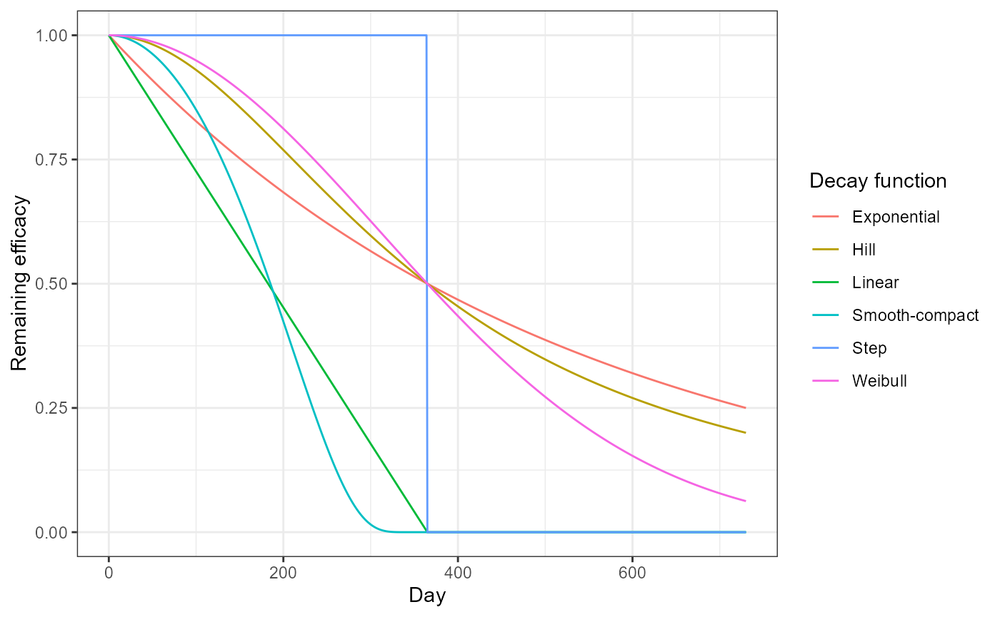
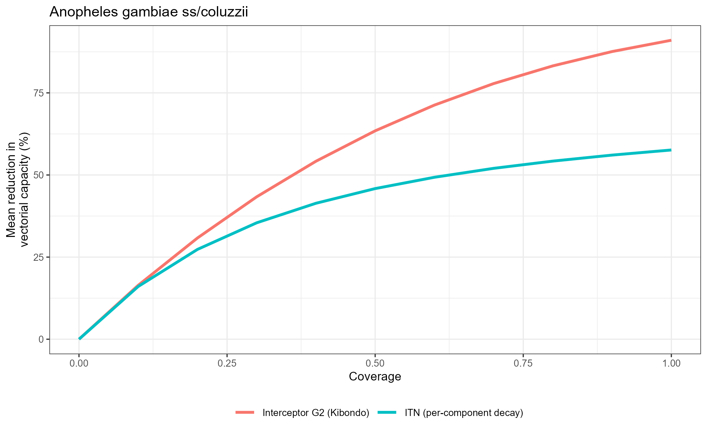
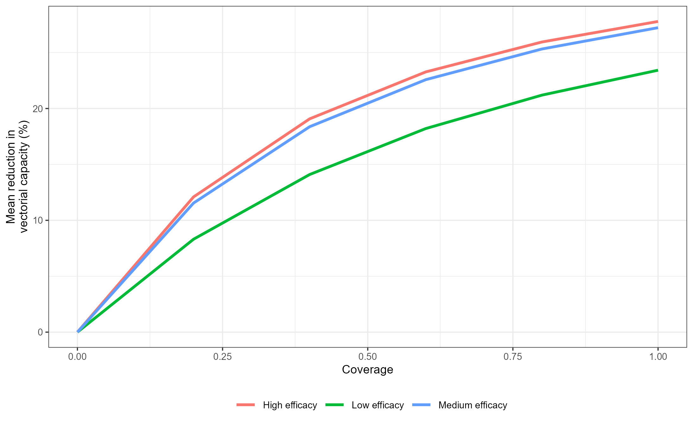
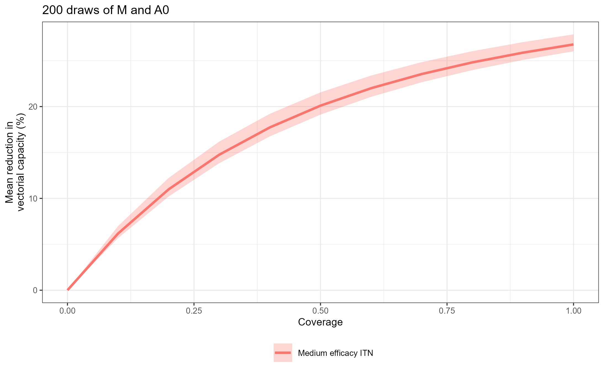

AnophelesModel Documentation
Monica Golumbeanu, Clara Champagne
2026-11-25
Source:vignettes/AnophelesModel.Rmd
AnophelesModel.RmdIntroduction
The AnophelesModel package parameterises a model of the
mosquito feeding cycle (Chitnis, Smith, and
Steketee 2008) using mosquito bionomics, human activity patterns,
and user-supplied intervention efficacy parameters. It estimates the
species-specific impact of vector control interventions on vectorial
capacity and can generate parameterisations for OpenMalaria. Version 2
is a refactoring of version 1 and is not backward compatible (see
NEWS.md for the differences).
The five feeding-cycle stages are: Host seeking → Host found (PAi) → Fed (PBi) → Resting (PCi) → Ovipositing (PDi) → back to Host seeking (PEi).
The typical analysis follows these steps:
-
def_vector_params(),def_host_params()anddef_activity_patterns()(withcalculate_exposure()) build_model_obj()-
build_intervention()(orget_ITN_params()for published ITN parameterisations) -
calculate_impact(), orrun_interventions()for many scenarios and uncertainty draws - optionally, export to OpenMalaria
Package database
Host parameters (host_ent_param):
species-independent transition probabilities (PBi,
PCi, PDi, PEi, Kvi)
for human and animal hosts in the absence of interventions.
Mosquito bionomics (vec_ent_param):
parameterisations for 57 Anopheles species, 17 complexes and
the genus, from the AnophelesBionomics
package, which estimates each parameter with a hierarchical Bayesian
model (genus, complex, species) from published field data. Taxa are
identified by their name and level
(species, complex, genus);
imputed_traits lists the parameters for which a taxon has
no data of its own (values from its complex or the genus). The resting
duration tau is estimated from the ratio of fed to gravid
females in resting collections.
head(vec_ent_param)
#> species_name level complex
#> 1 Albitarsis complex <NA>
#> 2 Annularis complex <NA>
#> 3 Anopheles genus <NA>
#> 4 Anopheles aconitus species Funestus
#> 5 Anopheles albimanus species <NA>
#> 6 Anopheles albitarsis A species Albitarsis
#> imputed_traits M M.sd
#> 1 endophily;HBI_indoor;HBI_outdoor;tau;A0 0.4992852 0.05449998
#> 2 endophagy;endophily;HBI_indoor;HBI_outdoor 0.5665722 0.05162611
#> 3 0.5621623 0.11195962
#> 4 endophagy;endophily;HBI_indoor;HBI_outdoor;tau 0.7417245 0.01627495
#> 5 HBI_indoor;M;tau 0.5621623 0.11195962
#> 6 endophagy;endophily;HBI_indoor;HBI_outdoor;M;tau;A0 0.4992852 0.05449998
#> Chi Chi.sd HBI_indoor HBI_indoor.sd HBI_outdoor HBI_outdoor.sd
#> 1 0.7862996 0.19935096 0.7862996 0.19935096 0.3210316 0.13119505
#> 2 0.7862996 0.19935096 0.7862996 0.19935096 0.3210316 0.13119505
#> 3 0.7862996 0.19935096 0.7862996 0.19935096 0.3210316 0.13119505
#> 4 0.8888701 0.05024776 0.8888701 0.05024776 0.2789333 0.09035337
#> 5 0.7862996 0.19935096 0.7862996 0.19935096 0.3204423 0.07581368
#> 6 0.7862996 0.19935096 0.7862996 0.19935096 0.3210316 0.13119505
#> A0 A0.sd zeta.3 td tau tau.sd ts to endophily
#> 1 0.4616783 0.13642676 1 0.33 2.032249 1.0160269 10 5 0.3741708
#> 2 0.5577209 0.10093231 1 0.33 1.928723 0.5250293 10 5 0.3741708
#> 3 0.4616783 0.13642676 1 0.33 2.032249 1.0160269 10 5 0.3741708
#> 4 0.4827996 0.06225184 1 0.33 1.905176 0.4840903 10 5 0.6773032
#> 5 0.4051511 0.01293158 1 0.33 2.032249 1.0160269 10 5 0.0891974
#> 6 0.4616783 0.13642676 1 0.33 2.032249 1.0160269 10 5 0.3741708
#> endophily.sd endophagy endophagy.sd
#> 1 0.29730378 0.4554501 0.06381631
#> 2 0.29730378 0.4030836 0.13087295
#> 3 0.29730378 0.4030836 0.13087295
#> 4 0.14655722 0.4822035 0.05195917
#> 5 0.01946437 0.2274075 0.01333692
#> 6 0.29730378 0.4554501 0.06381631
head(list_all_species(level = "complex"))
#> species_name level complex imputed_traits
#> 1 Albitarsis complex <NA> endophily;HBI_indoor;HBI_outdoor;tau;A0
#> 2 Annularis complex <NA> endophagy;endophily;HBI_indoor;HBI_outdoor
#> 3 Barbirostris complex <NA> endophagy;endophily;HBI_indoor;HBI_outdoor;tau
#> 4 Dirus complex <NA> endophagy;endophily;HBI_indoor;HBI_outdoor;tau
#> 5 Funestus complex <NA>
#> 6 Gambiae complex <NA>Activity patterns (activity_patterns):
mosquito biting rhythms and human sleeping activity (Sherrard-Smith et al. 2019; Briët et al. 2019).
Query with list_activity().
Estimating the impact of vector control interventions
Step 1: Define vector entomological parameters
Choose an existing taxon from the database. An. gambiae s.s. and An. coluzzii are merged in the data; “Anopheles gambiae” is also accepted for this species, with a warning:
gambiae_vec_p = def_vector_params(mosquito_species = "Anopheles gambiae ss/coluzzii")A complex is selected with level = "complex" (e.g. the
whole Gambiae complex). By default the human blood index
Chi is the indoor HBI;
hbi = "outdoor" or hbi = "weighted" (indoor
and outdoor HBI weighted by endophagy) are alternatives:
gambiae_complex = def_vector_params("Gambiae", level = "complex")
gambiae_outdoor = def_vector_params("Anopheles gambiae ss/coluzzii", hbi = "outdoor")A newer version of the bionomics table (same columns) can be used
without reinstalling the package:
def_vector_params(..., bionomics_table = read_bionomics_table("file.csv")).
Or supply a custom data frame with (a subset of) the column names of
vec_ent_param. The model needs M (parous
rate), Chi (human blood index, HBI), A0 (sac
rate), zeta.3, td, tau (resting
duration, days) and ts (extrinsic incubation period, a
whole number of days); a missing or out-of-range value is an error.
Chi is used as supplied:
custom_vec_table = data.frame(
species_name = "My species",
M = 0.623, M.sd = 0.06, # parous rate
Chi = 0.939, # Human Blood Index (HBI)
A0 = 0.313, A0.sd = 0.03, # sac rate
zeta.3 = 1, td = 0.33, tau = 1.1, ts = 10, to = 5,
endophily = 0.813, endophily.sd = 0.07,
endophagy = 0.813, endophagy.sd = 0.07
)
custom_vec_p = def_vector_params(vector_table = custom_vec_table)Step 2: Define host-specific parameters
Host parameters are defined as follows:
host_p = def_host_params()
print(host_p)
#> $species_name
#> [1] "Anopheles gambiae" "Anopheles gambiae"
#>
#> $host
#> [1] "human" "animal"
#>
#> $PBi
#> [1] 0.95 0.95
#>
#> $PCi
#> [1] 0.95 0.95
#>
#> $PDi
#> [1] 0.99 0.99
#>
#> $PEi
#> [1] 0.88 0.88
#>
#> $Kvi
#> [1] 0.03 0.00A custom table (one human and one animal row, probabilities in [0,
1]) can be passed via host_table:
custom_host_table = data.frame(
host = c("human", "animal"),
PBi = c(0.95, 0.70), PCi = c(0.90, 0.70),
PDi = c(0.90, 0.80), PEi = c(0.88, 0.80),
Kvi = c(0.52, 0.00)
)
custom_host_p = def_host_params(host_table = custom_host_table)Step 3: Define activity patterns and compute exposure
Use the built-in defaults or select from the database by entry ID:
# Built-in default (An. gambiae, Kenya)
activity_gambiae = def_activity_patterns("default_Anopheles_gambiae")
# From database by entry ID
activity_arabiensis = def_activity_patterns(list(
HBI = 34, HBO = 165, humans_indoors = 4, humans_in_bed = 24
))Time-series vectors can also be supplied directly as a named list
with elements HBI, HBO,
humans_indoors, humans_in_bed.
calculate_exposure() decomposes total human exposure
into indoor/outdoor components. For example,
Exposure_Indoor_whileinbed gives the fraction of bites
received indoors while sleeping — the portion an ITN would protect
against (for IRS, see below). Unlike in version 1, exposure does not
modify the intervention efficacies: it reduces the effective
coverage (coverage × exposure), passed via the
exposure argument of calculate_impact() and
run_interventions():
exposure = calculate_exposure(activity_cycles = activity_gambiae,
vec_p = gambiae_vec_p)
print(exposure)
#> $Exposure_Indoor_total
#> [1] 0.9415679
#>
#> $Exposure_Outdoor_total
#> [1] 0.0584321
#>
#> $Exposure_Indoor_whileinbed
#> [1] 0.9238849
#>
#> $Exposure_Outdoor_whileinbed
#> [1] 0.01055327
#>
#> $indoor_resting
#> [1] 0.7258244Which mosquitoes does IRS reach? Two choices are defensible, and the package offers both:
-
mosquitoes resting indoors
(
indoor_resting, the endophily): spraying reaches the mosquitoes resting on the walls; -
mosquitoes biting indoors
(
Exposure_Indoor_total): the share of bites received indoors, where IRS is deployed.
They agree only when the share of mosquitoes resting indoors equals the share of bites indoors. Neither is wrong in itself; the appropriate one depends on how the IRS efficacies were estimated. Use the same choice in the vectorial capacity calculation and in the OpenMalaria export:
- here, pass
exposure = exposure$indoor_restingorexposure = exposure$Exposure_Indoor_totaltocalculate_impact()/run_interventions(); - in the OpenMalaria export,
get_OM_ento_snippet(irs_exposure = "indoor_resting")(default) or"indoor_biting"(see “Export to OpenMalaria”).
Step 4: Build the model object
model_p = build_model_obj(gambiae_vec_p, host_p)
print(model_p$host_params$muvA) # mosquito death rate while host-seeking
#> [1] 0.6461614
print(model_p$host_params$alphai) # per-individual-host availability rates
#> [1] 1.9794421 0.3109918Step 5: Build an intervention object
Efficacy parameters map directly to feeding-cycle probabilities:
| Parameter | Mechanism | Model |
|---|---|---|
Deterrency |
Reduces host availability (alphai) for protected
humans: deterred mosquitoes keep searching |
Both |
PrePrandial |
Kills mosquitoes after they find a protected human, before they
feed: reduces the probability of biting and surviving
(PBi) |
Standard (3 hosts) |
PostPrandial |
Kills mosquitoes after feeding: reduces the probability of surviving
to find a resting place (PCi) |
Both |
KillingDuringHostSeekingAbsolute |
Adds a dummy host: mosquitoes killed while searching | Dummy-host (4 hosts) |
In the feeding-cycle model, a mosquito that fails a stage after finding a host dies, so pre- and post-prandial effects are mortality.
Any subset of the components can be given (omitted ones are 0).
Deterrency, PrePrandial and
PostPrandial are probabilities in [0, 1]. In the dummy-host
model, KillingDuringHostSeekingAbsolute replaces
PrePrandial (a non-zero PrePrandial with it is
an error): mosquitoes are killed while searching for a host, through a
fourth “dummy” host whose availability is
KillingDuringHostSeekingAbsolute. As the name says, it is
an absolute rate (per day, in the units of the host
availabilities alphai), not a probability, and can exceed
1. By a provisional convention, the per hut-night rates of experimental
hut fits are used as per-day rates.
All components share an attrition decay
(halflife_attrition, shape_attrition,
decay_attrition) describing physical degradation over time.
The decay function (decay_attrition) is one of those of
OpenMalaria: "weibull", "exponential",
"hill", "linear", "step",
"smooth-compact" and "none". Its parameter
L (halflife_attrition) is the half-life (value
0.5 at t = L) for Weibull, exponential and Hill, and the
time at which the effect reaches zero for linear, step and
smooth-compact. The shape parameter kappa
(shape_attrition) is needed for Weibull, Hill and
smooth-compact. All these decay functions start at 1 and decrease
towards 0, so the efficacy never exceeds its initial value (the only
exception is a negative halflife_insecticide, see
below).
#> Warning: package 'ggplot2' was built under R version 4.5.3
Decay functions (L=365 days, kappa=2 where applicable).
Built-in ITN parameterisations.
list_ITN_params() lists the nets and experimental hut
trials (EHT) of the database (Champagne et al.
2025), each available for both model structures; the net type
(net_type) and the EHT are the arguments of
get_ITN_params():
head(list_ITN_params())
#> netType EHT reference
#> 1 Interceptor G2 Assenga Assenga et al., Tanzania
#> 2 Olyset Plus Assenga Assenga et al., Tanzania
#> 3 Pyrethroid-only Assenga Assenga et al., Tanzania
#> 4 Interceptor G2 Assenga, CI Assenga et al., Côte d'Ivoire
#> 5 Olyset Plus Assenga, CI Assenga et al., Côte d'Ivoire
#> 6 Pyrethroid-only Assenga, CI Assenga et al., Côte d'IvoireStandard model — built-in parameterisation for
Interceptor G2 from the Kibondo EHT, with Weibull attrition (half-life 3
years) and per-component linear insecticide decay,
passed via halflife_insecticide (in years). Despite its
name, this is the time at which the effect would reach zero, calibrated
so that the efficacy at the aging time of the trial’s washed arm (3
years, 2 for Sovegnon) equals the efficacy of nets washed 20 times (a
negative value, when washed nets perform better, makes the effect
increase over time):
itn_p = get_ITN_params("Interceptor G2", "Kibondo")
#> ITN parameterisation loaded: Interceptor G2 (Kibondo)
#> Mode: standard
#> Reference: Kibondo et al.
#> Efficacy (unwashed):
#> PostPrandial PrePrandial Deterrency
#> 0.52 0.44 0.71
#> Insecticide decay, linear time to zero (years; omitted = no decay):
#> PostPrandial PrePrandial Deterrency
#> 31.2 66.0 -71.0
my_interv = build_intervention(
efficacy = itn_p$efficacy,
halflife_insecticide = itn_p$halflife_insecticide,
mode = itn_p$mode,
halflife_attrition = 3*365, shape_attrition = 2, decay_attrition = "weibull",
duration_years = 3, model_p = model_p, name = itn_p$name
)
#> build_intervention: using standard (3-host) model with PrePrandial.With insecticide decay (the default
insecticide_decay = TRUE), the object also contains, for
each efficacy component, the single Weibull decay that best approximates
attrition × insecticide decay (as used for OpenMalaria GVI
parameterisations). The model itself uses the exact decay:
my_interv[[1]]$fitted_decay
#> component L kappa rmse
#> 1 Deterrency 1123.920 2.111902 0.001447042
#> 2 PrePrandial 1061.447 1.899377 0.001289616
#> 3 PostPrandial 1021.847 1.806974 0.002467478Set insecticide_decay = FALSE to ignore the insecticide
decay and keep the unwashed efficacy throughout (only attrition
decays):
my_interv_nodecay = build_intervention(
efficacy = itn_p$efficacy, halflife_insecticide = itn_p$halflife_insecticide,
mode = itn_p$mode, insecticide_decay = FALSE,
halflife_attrition = 3*365, shape_attrition = 2, decay_attrition = "weibull",
duration_years = 3, model_p = model_p, name = itn_p$name
)Custom efficacy values can also be supplied directly:
my_interv_custom = build_intervention(
efficacy = c(Deterrency = 0.50, PrePrandial = 0.60, PostPrandial = 0.70),
halflife_attrition = 3*365, shape_attrition = 2, decay_attrition = "weibull",
duration_years = 3, model_p = model_p, name = "Custom ITN"
)Dummy-host model — host-seeking killing replaces
pre-prandial; deterrency and post-prandial killing remain. Use
mode = "dummy_host" to load the corresponding parameters
from the database. In the hut trial fits, host-seeking killing is
estimated relative to the availability alpha_0 of the
trial’s control arm (KillingDuringHostSeekingRelative in
the database); since alpha_0 varies widely between trials,
get_ITN_params() multiplies it back by the control
alpha_0 of the same arm (unwashed or washed) to return the
absolute value
KillingDuringHostSeekingAbsolute, comparable across trials
and used by the model (rescale_hsk = FALSE returns the
relative value, e.g. to rescale it with another alpha_0;
the model does not accept it):
itn_dh_p = get_ITN_params("Interceptor G2", "Kibondo", mode = "dummy_host")
#> ITN parameterisation loaded: Interceptor G2 (Kibondo)
#> Mode: dummy_host
#> Reference: Kibondo et al.
#> Efficacy (unwashed):
#> PostPrandial Deterrency
#> 0.520 0.710
#> KillingDuringHostSeekingAbsolute
#> 0.609
#> Host-seeking killing rescaled by the control alpha_0 (unwashed 0.17, washed 0.16)
#> Insecticide decay, linear time to zero (years; omitted = no decay):
#> PostPrandial Deterrency
#> 31.200 -71.000
#> KillingDuringHostSeekingAbsolute
#> 28.981
my_interv_dh = build_intervention(
efficacy = itn_dh_p$efficacy,
halflife_insecticide = itn_dh_p$halflife_insecticide,
mode = itn_dh_p$mode,
halflife_attrition = 180, shape_attrition = 2, decay_attrition = "weibull",
duration_years = 3, model_p = model_p, name = itn_dh_p$name
)
#> build_intervention: using dummy-host (4-host) model with KillingDuringHostSeekingAbsolute.
# effects matrices now have 4 columns (protected humans, unprotected, animals, dummy host)
ncol(my_interv_dh[[1]]$effects$alphai)
#> [1] 4Per-component decay — each efficacy component can
decay independently via the component_decay argument
(optional: when absent, a component stays at its initial value
throughout and only the attrition decay applies):
my_interv_compdecay = build_intervention(
efficacy = c(Deterrency = 0.50, PrePrandial = 0.60, PostPrandial = 0.70),
halflife_attrition = 365, shape_attrition = 2, decay_attrition = "weibull",
duration_years = 3, model_p = model_p,
name = "ITN (per-component decay)",
component_decay = list( # optional per-component decay
Deterrency = list(decay = "hill", L = 90, kappa = 3), # fast
PrePrandial = list(decay = "linear", L = 730, kappa = NULL) # slow
)
)
#> build_intervention: using standard (3-host) model with PrePrandial.Step 6: Calculate impact
Pass the intervention objects to calculate_impact() with
the deployment coverages. For an ITN, the protected share of exposure is
the in-bed exposure from Step 3; the model then uses the effective
coverage coverage × exposure, while results are reported
against deployment coverage. Several interventions are evaluated in one
call: combine them with c() (not list(), since
each build_intervention() output is already a list). Here,
two standard-model ITNs of Step 5 (dummy-host interventions can be mixed
in the same call):
coverages = seq(0, 1, by = 0.1)
impacts = calculate_impact(
interventions_vec = c(my_interv, my_interv_compdecay),
coverage_vec = coverages,
model_p = model_p,
exposure = exposure$Exposure_Indoor_whileinbed
)The result is a table with one row per intervention and coverage: the
intervention’s position and name, its parameters, then
coverage, exposure, the average vectorial
capacity avg_vc and its average reduction
avg_impact over the duration of the intervention:
impacts[abs(impacts$coverage - 0.8) < 1e-9, c("name", "coverage", "avg_impact")]
#> name coverage avg_impact
#> <char> <num> <num>
#> 1: Interceptor G2 (Kibondo) 0.8 0.8322229
#> 2: ITN (per-component decay) 0.8 0.5422930plot_impact() draws one line per intervention, labelled
with its name (give each intervention a distinct
name, otherwise they share the label
"custom"):
plot_impact(impacts, title = "Anopheles gambiae ss/coluzzii")
#> Ignoring unknown labels:
#> • fill : ""
Vectorial capacity reduction for two ITNs of Step 5.
With keep_time = TRUE, calculate_impact()
also returns the vectorial capacity and its reduction on each day
($time), e.g. to follow the decay of the impact after
deployment.
Step 7: Many scenarios and uncertainty with
run_interventions()
run_interventions() takes the interventions as a table
instead of objects: each row of a data frame param_sets is
one intervention, and all rows are evaluated at all coverages in one
call. calculate_impact() is
run_interventions() applied to the parameters stored in
each intervention object, so both give the same results, in the same
format, and plot_impact() draws both.
-
Columns of
param_sets: the efficaciesdeterrency,preprandial,postprandial(required) and optionallykilling_during_host_seeking_absolute; the attrition decaydecay_attrition(required), withhalflife_attrition(days) unless it is"none"andshape_attritionfor Weibull, Hill and smooth-compact; optional per-component decay columns (below). Any other column (e.g.name) is carried to the output. -
Other arguments:
coverage_vec,duration_years,exposure(as incalculate_impact()), andinsecticide_decay = FALSEto ignore the per-component decay columns. -
Output: a
data.tablewith one row per parameter set and coverage (and draw): the input columns, thencoverage,exposure,avg_vcandavg_impact.
Scenario sweep
param_sets = data.frame(
name = c("Low efficacy", "Medium efficacy", "High efficacy"),
deterrency = c(0.20, 0.4, 0.5),
preprandial = c(0.25, 0.55, 0.80),
postprandial = c(0.20, 0.50, 0.75),
halflife_attrition = 180, shape_attrition = 2, decay_attrition = "weibull",
stringsAsFactors = FALSE
)
results = run_interventions(
param_sets = param_sets,
model_p = model_p,
coverage_vec = seq(0, 1, by = 0.2),
duration_years = 3
)
#> run_interventions: using standard (3-host) model.
head(results)
#> name deterrency preprandial postprandial halflife_attrition
#> <char> <num> <num> <num> <num>
#> 1: Low efficacy 0.2 0.25 0.2 180
#> 2: Low efficacy 0.2 0.25 0.2 180
#> 3: Low efficacy 0.2 0.25 0.2 180
#> 4: Low efficacy 0.2 0.25 0.2 180
#> 5: Low efficacy 0.2 0.25 0.2 180
#> 6: Low efficacy 0.2 0.25 0.2 180
#> shape_attrition decay_attrition coverage exposure avg_vc avg_impact
#> <num> <char> <num> <num> <num> <num>
#> 1: 2 weibull 0.0 1 0.1919267 0.00000000
#> 2: 2 weibull 0.2 1 0.1759770 0.08310308
#> 3: 2 weibull 0.4 1 0.1648712 0.14096773
#> 4: 2 weibull 0.6 1 0.1569808 0.18207920
#> 5: 2 weibull 0.8 1 0.1512451 0.21196440
#> 6: 2 weibull 1.0 1 0.1469672 0.23425341
plot_impact(results)
#> Ignoring unknown labels:
#> • fill : ""
Vectorial capacity reduction for three efficacy scenarios.
Dummy-host model
The two model structures of Step 5 are mutually exclusive within a
param_sets table. For the dummy-host model, add
killing_during_host_seeking_absolute (an absolute rate, see
Step 5) and set preprandial to 0 (the column stays
required):
dummyhost_ps = data.frame(
name = c("Dummy-host ITN", "Dummy-host ITN, HSK decay"),
deterrency = 0.55,
preprandial = 0,
postprandial = 0.24,
killing_during_host_seeking_absolute = 1.10,
halflife_attrition = 180, shape_attrition = 2, decay_attrition = "weibull",
# second row: Weibull insecticide decay of host-seeking killing (half-life 90 days)
decay_hsk = c(NA, "weibull"), L_hsk = c(NA, 90), kappa_hsk = c(NA, 2),
stringsAsFactors = FALSE
)
res_dh = run_interventions(dummyhost_ps, model_p, seq(0, 1, by = 0.2),
duration_years = 3)
#> run_interventions: using dummy-host (4-host) model (killing_during_host_seeking_absolute column detected).
res_dh[, c("name", "coverage", "avg_impact")]
#> name coverage avg_impact
#> <char> <num> <num>
#> 1: Dummy-host ITN 0.0 0.00000000
#> 2: Dummy-host ITN 0.2 0.13790022
#> 3: Dummy-host ITN 0.4 0.20723053
#> 4: Dummy-host ITN 0.6 0.24649899
#> 5: Dummy-host ITN 0.8 0.27140889
#> 6: Dummy-host ITN 1.0 0.28883740
#> 7: Dummy-host ITN, HSK decay 0.0 0.00000000
#> 8: Dummy-host ITN, HSK decay 0.2 0.08415098
#> 9: Dummy-host ITN, HSK decay 0.4 0.13182898
#> 10: Dummy-host ITN, HSK decay 0.6 0.16254908
#> 11: Dummy-host ITN, HSK decay 0.8 0.18454659
#> 12: Dummy-host ITN, HSK decay 1.0 0.20157910Per-component insecticide decay
As with halflife_insecticide and
component_decay in build_intervention(), each
efficacy can decay on top of attrition, with optional columns per
component (suffix _det, _pre,
_post, _hsk):
-
halflife_<suffix>: linear decay, time to zero in years; -
decay_<suffix>,L_<suffix>(days),kappa_<suffix>: any decay function, overridinghalflife_<suffix>.
NA or an absent column means no insecticide decay for
that component:
# Three scenarios with identical initial efficacy but different component decays
comp_decay_ps = data.frame(
name = c("No comp. decay", "Fast deterrency", "Differential decay"),
deterrency = 0.55,
preprandial = 0.45,
postprandial = 0.40,
halflife_attrition = 365, shape_attrition = 2, decay_attrition = "weibull",
# Scenario 2: deterrency decays fast (Weibull, half-life 60 d, kappa 3)
# Scenario 3: deterrency fast (Weibull), pre-prandial slow (linear, 2 yr), post-prandial medium (linear, 1 yr)
decay_det = c(NA, "weibull", "weibull"),
L_det = c(NA, 60, 60),
kappa_det = c(NA, 3, 3),
decay_pre = c(NA, NA, "linear"),
L_pre = c(NA, NA, 730),
kappa_pre = c(NA, NA, NA),
decay_post = c(NA, NA, "linear"),
L_post = c(NA, NA, 365),
kappa_post = c(NA, NA, NA),
stringsAsFactors = FALSE
)
comp_results = run_interventions(
param_sets = comp_decay_ps,
model_p = model_p,
coverage_vec = seq(0, 1, by = 0.1),
duration_years = 3
)
#> run_interventions: using standard (3-host) model.
head(comp_results[, c("name", "coverage", "avg_impact")])
#> name coverage avg_impact
#> <char> <num> <num>
#> 1: No comp. decay 0.0 0.00000000
#> 2: No comp. decay 0.1 0.09892436
#> 3: No comp. decay 0.2 0.18159449
#> 4: No comp. decay 0.3 0.25061732
#> 5: No comp. decay 0.4 0.30822350
#> 6: No comp. decay 0.5 0.35631635Parameter uncertainty
Uncertainty is propagated with draws, supplied through up to four
arguments. They are zipped: draw d uses
entry d of every source supplied, so all must have the same
number of draws. The output gains a draw column.
| Argument | One draw is | Replaces |
|---|---|---|
vec_param_sets |
a row with the columns of vec_ent_param
|
the bionomics of model_p
|
interv_param_sets |
a row with the columns of param_sets
|
param_sets |
coverage_sets |
a vector of coverages (list element) | coverage_vec |
exposure_sets |
an exposure factor, e.g. from calculate_exposure()
|
exposure |
Vector bionomics. The database stores posterior
means and standard deviations (M.sd, A0.sd,
Chi.sd, tau.sd, …), but draws are not
generated automatically. Here, 200 independent normal draws of the
parous and sac rates of An. gambiae ss/coluzzii, truncated to
(0, 1), which ignores correlations between parameters:
set.seed(42)
n_draws = 200
base_vec = vec_ent_param[vec_ent_param$species_name == "Anopheles gambiae ss/coluzzii" &
vec_ent_param$level == "species", ]
vec_draws = base_vec[rep(1, n_draws), ]
vec_draws$M = pmax(pmin(rnorm(n_draws, base_vec$M, base_vec$M.sd), 0.999), 0.001)
vec_draws$A0 = pmax(pmin(rnorm(n_draws, base_vec$A0, base_vec$A0.sd), 0.999), 0.001)
single_scenario = data.frame(
name="Medium efficacy ITN", deterrency=0.45, preprandial=0.55,
postprandial=0.50, halflife_attrition=180, shape_attrition=2,
decay_attrition="weibull", stringsAsFactors=FALSE
)
coverage_grid = seq(0, 1, by=0.1)
uncertainty_results = run_interventions(
param_sets=single_scenario, model_p=model_p, coverage_vec=coverage_grid,
vec_param_sets=vec_draws, duration_years=3
)
#> run_interventions: using standard (3-host) model.
# The draw-specific bionomics are included in the output
head(uncertainty_results)
#> name deterrency preprandial postprandial halflife_attrition
#> <char> <num> <num> <num> <num>
#> 1: Medium efficacy ITN 0.45 0.55 0.5 180
#> 2: Medium efficacy ITN 0.45 0.55 0.5 180
#> 3: Medium efficacy ITN 0.45 0.55 0.5 180
#> 4: Medium efficacy ITN 0.45 0.55 0.5 180
#> 5: Medium efficacy ITN 0.45 0.55 0.5 180
#> 6: Medium efficacy ITN 0.45 0.55 0.5 180
#> shape_attrition decay_attrition species_name level
#> <num> <char> <char> <char>
#> 1: 2 weibull Anopheles gambiae ss/coluzzii species
#> 2: 2 weibull Anopheles gambiae ss/coluzzii species
#> 3: 2 weibull Anopheles gambiae ss/coluzzii species
#> 4: 2 weibull Anopheles gambiae ss/coluzzii species
#> 5: 2 weibull Anopheles gambiae ss/coluzzii species
#> 6: 2 weibull Anopheles gambiae ss/coluzzii species
#> complex imputed_traits M M.sd Chi Chi.sd HBI_indoor
#> <char> <char> <num> <num> <num> <num> <num>
#> 1: Gambiae endophily 0.6179252 0.003408961 0.8642215 0.00805288 0.8642215
#> 2: Gambiae endophily 0.6179252 0.003408961 0.8642215 0.00805288 0.8642215
#> 3: Gambiae endophily 0.6179252 0.003408961 0.8642215 0.00805288 0.8642215
#> 4: Gambiae endophily 0.6179252 0.003408961 0.8642215 0.00805288 0.8642215
#> 5: Gambiae endophily 0.6179252 0.003408961 0.8642215 0.00805288 0.8642215
#> 6: Gambiae endophily 0.6179252 0.003408961 0.8642215 0.00805288 0.8642215
#> HBI_indoor.sd HBI_outdoor HBI_outdoor.sd A0 A0.sd zeta.3 td
#> <num> <num> <num> <num> <num> <int> <num>
#> 1: 0.00805288 0.7008052 0.03420376 0.4958833 0.06231277 1 0.33
#> 2: 0.00805288 0.7008052 0.03420376 0.4958833 0.06231277 1 0.33
#> 3: 0.00805288 0.7008052 0.03420376 0.4958833 0.06231277 1 0.33
#> 4: 0.00805288 0.7008052 0.03420376 0.4958833 0.06231277 1 0.33
#> 5: 0.00805288 0.7008052 0.03420376 0.4958833 0.06231277 1 0.33
#> 6: 0.00805288 0.7008052 0.03420376 0.4958833 0.06231277 1 0.33
#> tau tau.sd ts to endophily endophily.sd endophagy
#> <num> <num> <int> <int> <num> <num> <num>
#> 1: 1.074949 0.02383553 10 5 0.7258244 0.1163184 0.5605694
#> 2: 1.074949 0.02383553 10 5 0.7258244 0.1163184 0.5605694
#> 3: 1.074949 0.02383553 10 5 0.7258244 0.1163184 0.5605694
#> 4: 1.074949 0.02383553 10 5 0.7258244 0.1163184 0.5605694
#> 5: 1.074949 0.02383553 10 5 0.7258244 0.1163184 0.5605694
#> 6: 1.074949 0.02383553 10 5 0.7258244 0.1163184 0.5605694
#> endophagy.sd coverage exposure avg_vc avg_impact draw
#> <num> <num> <num> <num> <num> <int>
#> 1: 0.004730246 0.0 1 0.3563954 0.00000000 1
#> 2: 0.004730246 0.1 1 0.3364269 0.05602913 1
#> 3: 0.004730246 0.2 1 0.3204454 0.10087116 1
#> 4: 0.004730246 0.3 1 0.3075969 0.13692227 1
#> 5: 0.004730246 0.4 1 0.2972146 0.16605370 1
#> 6: 0.004730246 0.5 1 0.2887761 0.18973105 1
# With draws, plot_impact() shows the median and the 95% interval
plot_impact(uncertainty_results, title = "200 draws of M and A0")
Uncertainty band (median + 95% interval) across 200 draws of vector parameters.
Across taxa. The same argument evaluates one
intervention for many taxa: each row of vec_ent_param is
then a “draw”, identified in the output by species_name and
level. Filter on level (complexes and the
genus have their own rows; a species alone in its complex is listed
once, as a species). A taxon whose bionomics are inconsistent with the
host parameters stops the run with an error:
all_species = vec_ent_param[vec_ent_param$level == "species", ]
res_species = run_interventions(single_scenario, model_p, coverage_vec = 0.8,
vec_param_sets = all_species, duration_years = 3)Intervention parameters. Each row of
interv_param_sets replaces param_sets for its
draw:
set.seed(7)
n_draws_interv = 50
interv_draws = data.frame(
name = "ITN",
deterrency = pmin(pmax(rnorm(n_draws_interv, 0.45, 0.08), 0), 1),
preprandial = pmin(pmax(rnorm(n_draws_interv, 0.55, 0.10), 0), 1),
postprandial = pmin(pmax(rnorm(n_draws_interv, 0.50, 0.09), 0), 1),
halflife_attrition = 180, shape_attrition = 2, decay_attrition = "weibull"
)
interv_unc_results = run_interventions(
param_sets=single_scenario, model_p=model_p, coverage_vec=coverage_grid,
interv_param_sets=interv_draws, duration_years=3
)
#> run_interventions: using standard (3-host) model.
nrow(interv_unc_results) # 11 coverages x 50 draws
#> [1] 550Several sources together, here 30 draws of both bionomics and intervention parameters:
n_draws_joint = 30
joint_results = run_interventions(
param_sets=single_scenario, model_p=model_p, coverage_vec=coverage_grid,
vec_param_sets = vec_draws[seq_len(n_draws_joint), ],
interv_param_sets = interv_draws[seq_len(n_draws_joint), ],
duration_years=3
)
#> run_interventions: using standard (3-host) model.
nrow(joint_results) # 11 coverages x 30 draws
#> [1] 330Step 8: Combining two interventions
calculate_combined_impact() evaluates two interventions
deployed together (e.g. ITN and IRS), given the coverage of each and the
share of people covered by both (cov_combination, by
default the product of the two coverages, i.e. independent deployment).
For people covered by both, the effects combine multiplicatively, and
host-seeking killing of dummy-host interventions adds up. The
interventions are evaluated over the shorter of their two durations.
There is no exposure argument, because the exposures of two
interventions overlap (e.g. bites in bed are also indoor bites): pass
exposure-adjusted coverages if needed.
interv_ITN = build_intervention(
efficacy = c(Deterrency = 0.5, PrePrandial = 0.6, PostPrandial = 0.7),
halflife_attrition = 180, shape_attrition = 2, decay_attrition = "weibull",
duration_years = 1, model_p = model_p, name = "ITN"
)
#> build_intervention: using standard (3-host) model with PrePrandial.
interv_IRS = build_intervention(
efficacy = c(Deterrency = 0.0, PrePrandial = 0.3, PostPrandial = 0.8),
halflife_attrition = 180, shape_attrition = 2, decay_attrition = "weibull",
duration_years = 1, model_p = model_p, name = "IRS"
)
#> build_intervention: using standard (3-host) model with PrePrandial.
combined_impact = calculate_combined_impact(
combination_name = "ITN + IRS",
intervention1 = interv_ITN[[1]], intervention2 = interv_IRS[[1]],
cov_intervention1 = 0.8, cov_intervention2 = 0.8,
model_p = model_p
)
#> ITN + IRS: assigned coverages 0.04 0.16 0.16 0.64
cat("Combined VC reduction:", round(combined_impact * 100, 1), "%\n")
#> Combined VC reduction: 88.1 %Export to OpenMalaria
This section can be read on its own: it only uses the objects it creates.
OpenMalaria scenarios (schema 44 by default; dummy-host nets need
schema 46 or later, see below) are written with openMalariaUtilities,
which builds a scenario as an R list (baseList) and writes
the XML file. This package does not write scenarios: it fills in the
entomology and the vector control interventions of a
baseList; the rest of the scenario (demography, health
system, monitoring, …) and the XML file are produced with
openMalariaUtilities, as usual. The steps are:
-
get_OM_ento_snippet(): mosquito populations and their parameters; -
define_OM_entomology(): writes them into thebaseList; -
om_vector_control(): specifies an ITN or IRS intervention; -
define_OM_vector_control()anddeploy_OM_vector_control(): write its definition and its deployment.
openMalariaUtilities is not on CRAN and is only a suggested
dependency: get_OM_ento_snippet(),
om_vector_control(), om_scenario_values() and
get_OM_xml() (XML text, see the end of this section) work
without it, but define_OM_entomology() and
define_OM_vector_control() require it. Install it from
GitHub:
remotes::install_github("SwissTPH/r-openMalariaUtilities")Entomology
Mosquito populations.
get_OM_ento_snippet() gives the parameters of each species,
from the bionomics database. With activity patterns, each species is
split into three populations by the interventions that reach them:
_indoor1 (reached by ITNs and IRS), _indoor2
(by only one of the two) and _outdoor (by neither). ITNs
reach the mosquitoes biting in bed; IRS reaches those resting indoors
(default) or, with irs_exposure = "indoor_biting", those
biting indoors. In the latter case the split follows directly from the
bites: _indoor1 is the share of bites in bed,
_indoor2 the share of bites indoors outside bed; with
resting indoors, the overlap of the two groups is assumed to be the
largest possible. The populations share all parameters except the human
blood index (indoor HBI for the indoor populations, outdoor HBI for the
outdoor one). A population with a share of 0 (e.g. _indoor2
when the two groups are the same size) is not written. Without activity
patterns, each species is a single population that ITNs and IRS reach
entirely, outdoor bites included; the vector control export then gives a
warning.
Contribution of each population to the EIR. The
annualEIR of each population is its relative contribution
to the EIR: the share of its species × its share within the species,
summing to 1 over all populations. OpenMalaria rescales them to the
total EIR, given separately in the scaledAnnualEIR
attribute of <entomology> (a number or a placeholder
such as "@EIR@"). The share of a species is its relative
abundance weighted by its sporozoite rate, computed by
eir_shares() (both are setting-specific; the values below
are illustrative). The contributions are either:
-
fixed: pass the species shares as
species_shares, and the contributions are written as numbers; -
placeholders: leave out
species_shares; each population then has a placeholder@contrib_<population>@, andom_ento_values()gives their values for one or several species compositions (one row each), e.g. to loop scenarios over species mixes.
Fixed contributions:
library(AnophelesModel)
spz = c("Anopheles gambiae ss/coluzzii" = 0.114, "Anopheles funestus" = 0.235)
mix = eir_shares(c("Anopheles gambiae ss/coluzzii" = 0.7, "Anopheles funestus" = 0.3), spz)
mix
#> Anopheles gambiae ss/coluzzii Anopheles funestus
#> 0.5309381 0.4690619
activity = def_activity_patterns("default_Anopheles_gambiae")
om_ento = get_OM_ento_snippet(names(mix), activity = activity, species_shares = mix)
#> get_OM_ento_snippet: annualEIR = the relative contribution of each population; set the total EIR with scaledAnnualEIR (e.g. defineEntomology(..., scaledAnnualEIR = "@EIR@")).
om_ento$shares
#> mosquito taxon type
#> 1 Anopheles gambiae ss/coluzzii_indoor1 Anopheles gambiae ss/coluzzii indoor1
#> 2 Anopheles gambiae ss/coluzzii_indoor2 Anopheles gambiae ss/coluzzii indoor2
#> 3 Anopheles gambiae ss/coluzzii_outdoor Anopheles gambiae ss/coluzzii outdoor
#> 4 Anopheles funestus_indoor1 Anopheles funestus indoor1
#> 5 Anopheles funestus_indoor2 Anopheles funestus indoor2
#> 6 Anopheles funestus_outdoor Anopheles funestus outdoor
#> share in_bed indoor_resting muvA species_share eir_share
#> 1 0.72582440 TRUE TRUE 0.64616143 0.5309381 0.38536784
#> 2 0.19806053 TRUE FALSE 0.64616143 0.5309381 0.10515789
#> 3 0.07611507 FALSE FALSE 0.64616143 0.5309381 0.04041239
#> 4 0.67730324 TRUE TRUE 0.08629624 0.4690619 0.31769713
#> 5 0.24054877 TRUE FALSE 0.08629624 0.4690619 0.11283226
#> 6 0.08214799 FALSE FALSE 0.08629624 0.4690619 0.03853249shares gives, per population, its share within the
species (share), the share of its species
(species_share), its share of the EIR
(eir_share), whether ITNs (in_bed) or IRS
(indoor_resting) reach it, and the host-seeking death rate
muvA.
Placeholder contributions, and their values for two compositions (the
columns contrib_<population> fill the placeholders of
the same name):
om_ento_ph = get_OM_ento_snippet(names(mix), activity = activity)
#> get_OM_ento_snippet: annualEIR = a placeholder @contrib_<population>@ for the relative contribution of each population (values: om_ento_values()); set the total EIR with scaledAnnualEIR (e.g. defineEntomology(..., scaledAnnualEIR = "@EIR@")).
om_ento_ph$seasonalityParameters[[1]]$annualEIR
#> [1] "@contrib_Anopheles_gambiae_ss_coluzzii_indoor1@"
om_ento_values(om_ento_ph, rbind(mix = mix, equal = c(0.5, 0.5)))
#> composition Anopheles gambiae ss/coluzzii Anopheles funestus
#> 1 mix 0.5309381 0.4690619
#> 2 equal 0.5000000 0.5000000
#> contrib_Anopheles_gambiae_ss_coluzzii_indoor1
#> 1 0.3853678
#> 2 0.3629122
#> contrib_Anopheles_gambiae_ss_coluzzii_indoor2
#> 1 0.10515789
#> 2 0.09903027
#> contrib_Anopheles_gambiae_ss_coluzzii_outdoor
#> 1 0.04041239
#> 2 0.03805753
#> contrib_Anopheles_funestus_indoor1 contrib_Anopheles_funestus_indoor2
#> 1 0.3176971 0.1128323
#> 2 0.3386516 0.1202744
#> contrib_Anopheles_funestus_outdoor
#> 1 0.03853249
#> 2 0.04107400Writing the entomology.
define_OM_entomology() writes the entomology into the
baseList, with the total EIR in
scaledAnnualEIR (here a placeholder) and the seasonality,
which gives the shape of the EIR over the year (OpenMalaria rescales it
to the annual EIR). The baseList also keeps the entomology,
so that the interventions use the same mosquito populations and
parameters. The seasonality is either fixed numbers, or placeholders
(default @m1@, …, @m12@, filled per scenario
by columns m1, …, m12), which need a recent
openMalariaUtilities (older versions reject them with R >= 4.3):
# baseList: an openMalariaUtilities scenario
baseList = define_OM_entomology(baseList, om_ento,
seasonality = c(2, 3, 5, 8, 6, 3, 1, 1, 1, 1, 1, 2),
scaledAnnualEIR = "@EIR@")
# or with the seasonality per scenario (columns m1..m12)
baseList = define_OM_entomology(baseList, om_ento, scaledAnnualEIR = "@EIR@")Vector control
Specifying an intervention.
om_vector_control() takes the efficacies of an intervention
and its decays (attrition, and optionally insecticide decay), with no
model or duration: the export builds the intervention with the
entomology of the scenario, over the right period. It takes a built-in
parameterisation from get_ITN_params() (see
list_ITN_params() for the available nets and trials), or
custom efficacies:
# Built-in: Interceptor G2, Kibondo hut trial, standard model
ig2 = om_vector_control(get_ITN_params("Interceptor G2", "Kibondo", verbose = FALSE),
halflife_attrition = 2 * 365, shape_attrition = 2)
# Custom
custom = om_vector_control(c(Deterrency = 0.4, PrePrandial = 0.5, PostPrandial = 0.3),
halflife_attrition = 2 * 365, shape_attrition = 2,
name = "Custom ITN")Campaign schedules. om_campaigns()
builds the schedule of campaigns: dates (regular, with
from, to and every, or given) and
coverages (numbers or placeholders such as "@cov2021@", one
per year with by_year = TRUE):
om_campaigns(dates = c("2021-01-01", "2024-01-01"), coverage = c(0.8, 0.6))
#> date coverage
#> 1 2021-01-01 0.8
#> 2 2024-01-01 0.6
om_campaigns("2015-01-25", "2018-01-25", every = "1 year",
coverage = "@histITNcov@", by_year = TRUE)
#> date coverage
#> 1 2015-01-25 @histITNcov2015@
#> 2 2016-01-25 @histITNcov2016@
#> 3 2017-01-25 @histITNcov2017@
#> 4 2018-01-25 @histITNcov2018@Define and deploy.
define_OM_vector_control() writes the definition of the
intervention and deploy_OM_vector_control() its deployment,
with the same name and a schedule:
baseList = define_OM_vector_control(baseList, ig2, intervention_type = "ITN", name = "IG2")
schedule = om_campaigns(dates = c("2021-01-01", "2024-01-01"), coverage = c(0.8, 0.6))
baseList = deploy_OM_vector_control(baseList, "IG2", schedule)-
Effects. Deterrency, pre-prandial and post-prandial
killing become an OpenMalaria generic vector intervention (GVI). Each
effect keeps its own decay; when attrition and insecticide decay cannot
be expressed as a single OpenMalaria decay, a Weibull is fitted to their
product, over 3 years for ITNs and 1 year for IRS
(
fit_yearsinom_vector_control()). When all decays are identical, the effects are written as a single component. -
Exposure. The effects act on the mosquito
populations exposed in bed (ITN) or resting indoors (IRS), see
sharesabove (all bites without activity patterns, with a warning). - Same people. The deployment holds all the components of the intervention, so that all effects reach the same people.
Deployments restricted to age groups, and continuous deployment (e.g. EPI), are described in Age-specific deployments below.
What has been checked in OpenMalaria. The export was run in OpenMalaria through openMalariaUtilities and its entomological outputs checked (each effect on its own parameter, in the populations it should reach, decays, campaigns):
- OpenMalaria 44: standard ITNs deployed by campaigns (also refresh on redeployment and baseline EIR);
- OpenMalaria 49: standard ITNs (same effects as in 44), dummy-host nets (below), a list of nets with placeholder decays (identical to the nets defined separately), IRS (both IRS exposure definitions), age-restricted, cumulative and continuous deployments.
The plain-text route (get_OM_xml()) writes the same XML
as the openMalariaUtilities route. Sub-population deployments have not
been run in OpenMalaria.
Dummy-host nets. The GVI has deterrency and
post-prandial killing only. Host-seeking killing, which the GVI cannot
represent, is written as it is in the model, a dummy host on which every
mosquito that finds it dies: for each campaign, an OpenMalaria non-human
host (<name>_dummy_<k>, added at the campaign
date), whose availability relative to an adult human is the coverage ×
KillingDuringHostSeekingAbsolute / human availability, and
decays as the GVI effects do: attrition × insecticide decay of
host-seeking killing, exact when it is a single OpenMalaria decay,
otherwise the fitted Weibull (one modification with an increasing decay,
none if it does not decay). As for the GVI, whose effects are refreshed
(not stacked) in people who receive a net again, each campaign replaces
the nets of its recipients: earlier dummy hosts are reduced by the
coverage of every later campaign. In OpenMalaria 49, timing, coverage,
replacement, populations reached and lifespan behave as designed, and
the decay of the dummy hosts follows the written decay within 0.3% of
the initial effect.
The relative availability of an added host is scaled by OpenMalaria by the availability of an average adult, the person sleeping in the experimental hut where host-seeking killing was measured. Relative to the average human of the population (the human of this package’s model), host-seeking killing is therefore stronger in OpenMalaria than in the package, by the ratio of adult to mean human availability (1.35 in the scenario checked, with a Tanzanian demography). This choice may be revisited.
Increasing decays need OpenMalaria schema 46 or
later (checked with 49): set OMVersion = 49L in
the baseList (or schema = 49 in
get_OM_xml()); from schema 49, the entomology is written
without propInfected / propInfectious, which
49 removed. Standard nets work with both 44 and 49.
The dummy hosts are written by
deploy_OM_vector_control(), with the schedule. A dummy-host
intervention is deployed once, with the whole schedule,
and cannot be restricted to a sub-population, by age, or be cumulative.
The hosts last until end_date if given (e.g. in
om_campaigns()), otherwise 100 years:
ig2_dh = om_vector_control(get_ITN_params("Interceptor G2", "Kibondo",
mode = "dummy_host", verbose = FALSE),
halflife_attrition = 2 * 365, shape_attrition = 2)
# baseList with OMVersion = 49L, set before define_OM_entomology()
baseList = define_OM_vector_control(baseList, ig2_dh, name = "IG2_dh")
schedule_dh = om_campaigns(dates = c("2021-01-01", "2024-01-01"), coverage = c(0.8, 0.6),
end_date = "2027-01-01")
baseList = deploy_OM_vector_control(baseList, "IG2_dh", schedule_dh)Several nets. There are two cases:
- Different nets in the same scenario (e.g. historical nets until 2018, then new nets): define and deploy each as its own intervention, with its own name and schedule.
-
Alternative nets across scenarios (e.g. to compare
net types or trial parameterisations): a named list of interventions
(same model structure) defines one intervention,
deployed under the list’s
name; in each scenario, one net of the list is used.
Placeholders only where something varies. The XML has numbers wherever the scenarios cannot differ, and placeholders elsewhere:
- efficacies: placeholders with several nets;
-
decays: with
decay = "placeholder"indefine_OM_vector_control()(e.g. when the attrition varies between scenarios), otherwise the nets’ decays (which must then be the same). Each effect keeps its decay function when all the nets share it (e.g. astepfor historical nets that last one year), and is otherwise a Weibull; -
dummy hosts (dummy-host nets): availabilities as
placeholders unless the net and the coverages are fixed; their decay
(that of host-seeking killing,
@<name>_hsk_L@/_k@) as the other decays.
Here the built-in and the custom net as alternatives, with placeholder coverages and decays:
nets = list(IG2 = ig2, custom = custom)
schedule_ph = om_campaigns("2021-01-01", "2024-01-01", every = "3 years",
coverage = "@cov@", by_year = TRUE)
baseList = define_OM_vector_control(baseList, nets, name = "ITN", decay = "placeholder")
baseList = deploy_OM_vector_control(baseList, "ITN", schedule_ph)Filling the scenario table. The scenario table is
yours (built e.g. with expand.grid(), with your own
coverages). om_scenario_values() adds to it, row by row,
the values of the placeholders that were written: the efficacies of the
net named in column net, the decays and, for dummy-host
nets, the availabilities of the dummy hosts (from the coverage columns,
named like the placeholders of the schedule). The source is the
baseList (after define and deploy) or the result of
get_OM_xml(), which keep what was written, so the values
cannot disagree with the XML.
The decays differ between effects through the insecticide decay of
each effect (from the trial parameterisation), while the attrition is
the same for all effects. So by default halflife and
kappa name one attrition column each (in
years, decay_unit = "days" otherwise), and each effect’s
decay is this attrition combined with its insecticide decay (the dummy
hosts take the attrition as it is, their insecticide decay being
separate; combine = FALSE writes final decays given per
effect instead):
# Without openMalariaUtilities, the same definition and deployment as text
xml = get_OM_xml(om_ento, nets, schedule_ph, name = "ITN", decay = "placeholder",
entomology = FALSE)
scens = expand.grid(net = c("IG2", "custom"), attrition = c(2, 3),
cov2021 = c(0.5, 0.8), cov2024 = 0.6, seed = 1:2)
scens = om_scenario_values(scens, xml, net = "net", halflife = "attrition")
head(scens)
#> net attrition cov2021 cov2024 seed ITN_deterrency ITN_preprandial
#> 1 IG2 2 0.5 0.6 1 0.71 0.44
#> 2 custom 2 0.5 0.6 1 0.40 0.50
#> 3 IG2 3 0.5 0.6 1 0.71 0.44
#> 4 custom 3 0.5 0.6 1 0.40 0.50
#> 5 IG2 2 0.8 0.6 1 0.71 0.44
#> 6 custom 2 0.8 0.6 1 0.40 0.50
#> ITN_postprandial ITN_deterrency_L ITN_deterrency_k ITN_preprandial_L
#> 1 0.52 2.04272 2.05216 1.95368
#> 2 0.30 2.00000 2.00000 2.00000
#> 3 0.52 3.07923 2.11190 2.90807
#> 4 0.30 3.00000 2.00000 3.00000
#> 5 0.52 2.04272 2.05216 1.95368
#> 6 0.30 2.00000 2.00000 2.00000
#> ITN_preprandial_k ITN_postprandial_L ITN_postprandial_k
#> 1 1.94825 1.90174 1.89557
#> 2 2.00000 2.00000 2.00000
#> 3 1.89938 2.79958 1.80697
#> 4 2.00000 3.00000 2.00000
#> 5 1.94825 1.90174 1.89557
#> 6 2.00000 2.00000 2.00000Lower-level functions.
define_OM_vector_control() is built on
get_OM_GVI_snippet(), which returns the GVI as the input
list of openMalariaUtilities’ defineVectorControl(), and
add_OM_GVI(), which writes it into a baseList.
They are useful to write the deployment yourself, e.g. with
openMalariaUtilities’ deployIT(); in that case, deploy all
components of an intervention together.
om_gvi = get_OM_GVI_snippet(ig2, om_ento, intervention_type = "ITN")
#> OpenMalaria export: Deterrency decay = Weibull fitted to attrition x insecticide decay (rmse 0.00117)
#> OpenMalaria export: PrePrandial decay = Weibull fitted to attrition x insecticide decay (rmse 0.00113)
#> OpenMalaria export: PostPrandial decay = Weibull fitted to attrition x insecticide decay (rmse 0.00225)
om_gvi[[1]]$deterrency$decay # L in years
#> $L
#> [1] "2.04272"
#>
#> $`function`
#> [1] "weibull"
#>
#> $k
#> [1] "2.05216"Without openMalariaUtilities (XML text)
get_OM_xml() writes the same entomology and
interventions as XML text, to paste into an existing scenario:
-
entomology: the<vector>element (one<anopheles>per mosquito population, with its contribution asannualEIRand the seasonality placeholders"@m1@", …,"@m12@"), inside<entomology>, to which you add the total EIR asscaledAnnualEIR="@EIR@"(or a number); -
define(the components) anddeploy(the deployment): inside<interventions><human>, the components before all deployments; -
add_hostsandmodify_hosts, for dummy-host interventions (withschema = 49): the dummy hosts, inside<interventions><addNonHumanHosts>, and their decays, inside<interventions><nonHumanHostsModifications>.
schema (default 44) is the OpenMalaria schema version of
the scenario.
Printing the result shows each snippet with a comment saying where it
goes; writeLines(unlist(xml), "file.xml") saves them.
get_OM_xml(om_ento) gives the entomology only; for several
interventions, call it once per intervention with
entomology = FALSE after the first.
schedule = om_campaigns("2021-01-01", "2024-01-01", every = "3 years",
coverage = "@cov@", by_year = TRUE)
xml = get_OM_xml(om_ento, ig2, schedule, name = "IG2")
#> OpenMalaria export: Deterrency decay = Weibull fitted to attrition x insecticide decay (rmse 0.00117)
#> OpenMalaria export: PrePrandial decay = Weibull fitted to attrition x insecticide decay (rmse 0.00113)
#> OpenMalaria export: PostPrandial decay = Weibull fitted to attrition x insecticide decay (rmse 0.00225)
cat(xml$deploy)
#> <deployment name="IG2">
#> <component id="IG2-deterrency"/>
#> <component id="IG2-preprandialKillingEffect"/>
#> <component id="IG2-postprandialKillingEffect"/>
#> <timed>
#> <deploy coverage="@cov2021@" time="2021-01-01"/>
#> <deploy coverage="@cov2024@" time="2024-01-01"/>
#> </timed>
#> </deployment>Age-specific deployments
Nets can be deployed to age groups in two ways:
- campaigns restricted to an age group: at given dates, people of an age range receive the net (e.g. under-fives);
- continuous deployment: people receive the net when they reach a target age (e.g. infants at 3 months through EPI), while the deployment is active.
Both take the same arguments in
deploy_OM_vector_control() (openMalariaUtilities) and
get_OM_xml() (text). They apply to standard interventions
(dummy-host interventions are deployed to the whole population).
Campaigns for an age group. minAge and
maxAge (in years, numbers or placeholders) restrict every
campaign of the schedule to that age range; the coverage is then the
coverage within the age group. Give both or neither: a
single limit is an error, to avoid a deployment that silently reaches
all ages. Here the IG2 net to under-fives, in 2021 and 2024:
baseList = define_OM_vector_control(baseList, ig2, name = "IG2")
schedule_u5 = om_campaigns(dates = c("2021-01-01", "2024-01-01"),
coverage = "@covU5@", by_year = TRUE)
baseList = deploy_OM_vector_control(baseList, "IG2", schedule_u5, minAge = 0, maxAge = 5)The same deployment as text:
schedule_u5 = om_campaigns(dates = c("2021-01-01", "2024-01-01"),
coverage = "@covU5@", by_year = TRUE)
xml_u5 = get_OM_xml(om_ento, ig2, schedule_u5, name = "IG2",
minAge = 0, maxAge = 5, entomology = FALSE)
#> OpenMalaria export: Deterrency decay = Weibull fitted to attrition x insecticide decay (rmse 0.00117)
#> OpenMalaria export: PrePrandial decay = Weibull fitted to attrition x insecticide decay (rmse 0.00113)
#> OpenMalaria export: PostPrandial decay = Weibull fitted to attrition x insecticide decay (rmse 0.00225)
cat(xml_u5$deploy)
#> <deployment name="IG2">
#> <component id="IG2-deterrency"/>
#> <component id="IG2-preprandialKillingEffect"/>
#> <component id="IG2-postprandialKillingEffect"/>
#> <timed>
#> <deploy coverage="@covU52021@" time="2021-01-01" minAge="0" maxAge="5"/>
#> <deploy coverage="@covU52024@" time="2024-01-01" minAge="0" maxAge="5"/>
#> </timed>
#> </deployment>For several age groups, deploy the net once per group, each with its
own schedule and coverage placeholders (in text: the define
snippet once, the deploy snippet of each group). The age
ranges should not overlap, otherwise people in both ranges receive a net
from each deployment.
Continuous deployment. om_continuous()
gives the target ages, the coverage at each age (numbers or
placeholders) and, optionally, the dates between which the deployment is
active (by default, from the start of the intervention period, without
end). It is used as the schedule; campaign options
(minAge, maxAge, cumulative,
end_date) do not apply, but subpop does. Here
nets to infants at 3 months (EPI), from 2021:
baseList = deploy_OM_vector_control(baseList, "IG2",
om_continuous(age = 0.25, coverage = "@covEPI@", begin = "2021-01-01"))The same deployment as text:
cont = om_continuous(age = 0.25, coverage = "@covEPI@", begin = "2021-01-01")
xml_cont = get_OM_xml(om_ento, ig2, cont, name = "IG2", entomology = FALSE)
#> OpenMalaria export: Deterrency decay = Weibull fitted to attrition x insecticide decay (rmse 0.00117)
#> OpenMalaria export: PrePrandial decay = Weibull fitted to attrition x insecticide decay (rmse 0.00113)
#> OpenMalaria export: PostPrandial decay = Weibull fitted to attrition x insecticide decay (rmse 0.00225)
cat(xml_cont$deploy)
#> <deployment name="IG2">
#> <component id="IG2-deterrency"/>
#> <component id="IG2-preprandialKillingEffect"/>
#> <component id="IG2-postprandialKillingEffect"/>
#> <continuous>
#> <deploy coverage="@covEPI@" targetAgeYrs="0.25" begin="2021-01-01"/>
#> </continuous>
#> </deployment>Continuous and campaigns together. A net distributed
both routinely and by mass campaigns is deployed twice under the same
name, once with each schedule (two deployments of the same components);
in text, call get_OM_xml() once per schedule and paste the
define snippet of one call only.